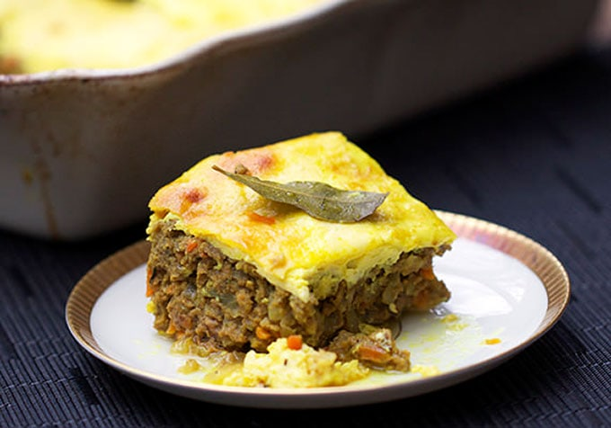

Bobotie

Description
Bobotie is a South-African dish and dates back tot the 17th century. It is considered to be the national dish of South Africa.
Bobotie is a casserole with curried ground beef at the bottom and a thin layer of egg custard on top.
Ingredients
- 2 tablespoons vegetable oil
- 2 medium onions, minced
- 1 pound ground beef
- 1 cup milk
- 2 slices Texas toast thick-sliced bread
- 1.5 tablespoon curry powder
- 1 large egg
- 1 bay leaf
Steps
- Start making bobotie
- Make the rest of bobotie
Home